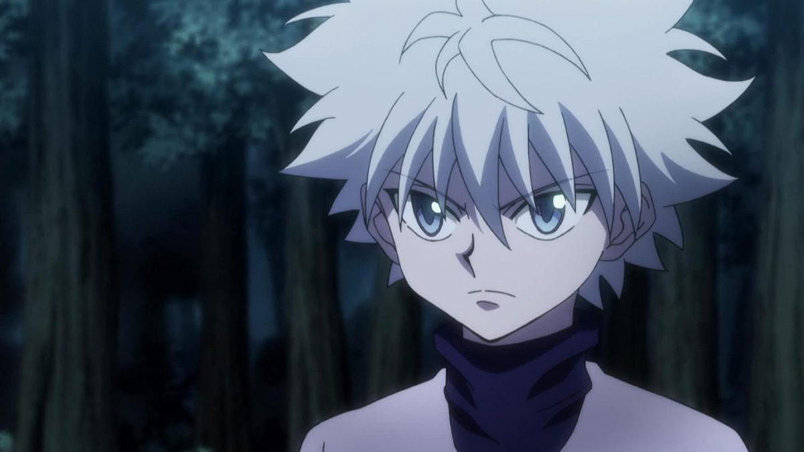
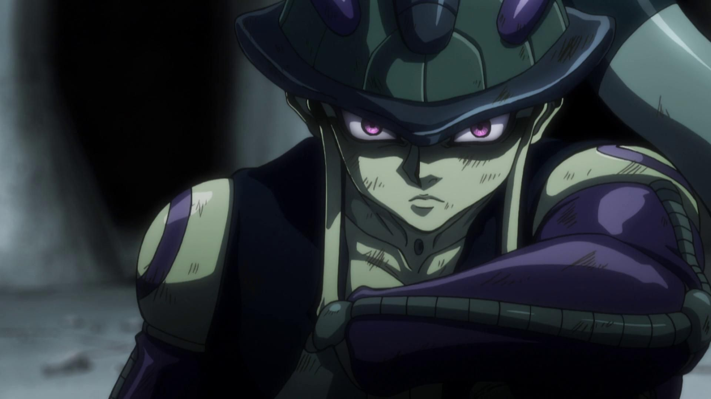

HunterXHunter: Killua Zondyck

"Quando eu digo que isso não pode me machucar, significa que eu posso suportar isso"
— Killua Zoldyck
Killua é um dos principais protagonistas de Hunter x Hunter meu melhor amigo. Killua é um assassino integrante da maior família de assassinos do mundo, os Zoldyck, porém, fugiu de casa e da tutela de seus pais aspirando por novos horizontes, tendo entrado no exame hunter como um desafio a si mesmo.
HunterXHunter: Meruem

"Eu aprendi a verdadeira necessidade do poder. Que é proteger os fracos, aqueles que merecem viver. O poder não foi feito para atormentar os derrotados."
— Meruem
Meruem foi a criatura mais poderosa da Rainha das Formigas Quimera. Ele era conhecido como o Rei das Formigas Quimera. Apesar de ser recém-nascido, Meruem é a Formiga Quimera mais poderosa, e o personagem mais poderoso a ser apresentado na série até agora, bem como um dos mais inteligentes. Nascido como a última arma biológica, seu poder físico só é acompanhado por um intelecto sem paralelo. Seu esmagador talento permite que ele analise e aprenda tudo de forma quase instantânea, e aperfeiçoe suas estratégias com perfeição. Meruem também possui uma confiança inquebrável e bem colocada em si mesmo, o que o impede de hesitar